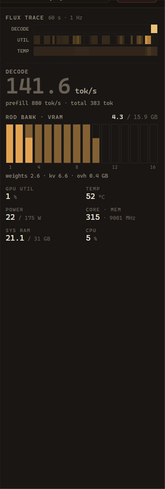

THE LOCAL LLM
APP THAT SHOWS
ITS WORK.
Tokamak finds the GGUF models already on your disk, works out the best way to run each one on your GPU, launches them through llama.cpp, and turns the whole thing into a live instrument panel.
A tokamak holds a fusion reaction inside a magnetic ring. Roughly the job here: contain a model that wants all of your VRAM, keep it stable, and get useful work out of it. The name also starts with “tok”, the only unit anyone here cares about.
- UNIT
- TOKAMAK
- VERSION
- 0.1.3
- PLATFORM
- WINDOWS · LINUX x64 · NVIDIA
- SHELL
- TAURI 2 · RUST + REACT
- ENGINE
- llama.cpp — MANAGED
- WEIGHTS
- PLAIN GGUF · NO STORE
- LICENCE
- MPL-2.0
- TELEMETRY
- NONE SENT. EVER.
- STATUS
- ○ UNPOWERED● ONLINE
Every other site would show you a screenshot of the arithmetic.
This one runs it. Below is Tokamak's actual VRAM estimator — the same
constants and the same formula the app uses, ported line for line out of
src-tauri/src/estimator.rs. Drive it. It will tell you what
your card can hold before you download anything at all.
—
Budget is 90 % of total VRAM, leaving the compositor and driver their share. Weights are the file scaled by the offloaded layer fraction, plus 5 % for embedding and output layers that the average bits-per-weight does not capture. The KV term is the only one that grows with context — which is the entire reason quantizing it buys you so much.
Download it and run it.
No Rust, no Node, no toolchain. Installers are built by CI on every tagged version.
01 · WINDOWS
Take the .msi from the latest release and run it. That is the
whole process. An .exe setup is published alongside it.
Windows will warn that the publisher is unknown — the build is unsigned. Choose More info → Run anyway.
LATEST RELEASE →02 · LINUX
An .AppImage that installs nothing — chmod +x and
run it — or a .deb or .rpm if you would rather it
went through your package manager. Built on Ubuntu 22.04, so it wants
22.04 or an equivalently recent distribution.
These are new, and the interface has not yet been seen rendering on a real Linux desktop session. If it comes up blank, please open an issue with your distribution, GPU and session type.
LATEST RELEASE →03 · WHAT YOU ALSO NEED
An NVIDIA GPU. Telemetry and benchmarking read NVML. That is the only hard requirement.
No separate inference runtime to install. On first run Tokamak offers to fetch the right llama.cpp build for your GPU and manages it itself — and picks up LM Studio's binaries automatically if you already have them.
One caveat worth stating plainly: on Linux the runtime it fetches is
Vulkan or CPU, because llama.cpp publishes no prebuilt CUDA build for
Linux. Install your distribution's CUDA-enabled llama.cpp and
Tokamak finds it on PATH and prefers it. Windows gets CUDA
directly.
Models are optional too: it reads your existing Hugging Face, LM Studio and Ollama caches, and downloads new ones itself.
▸ BUILDING FROM SOURCE INSTEAD
git clone https://github.com/360NoScopeGuru/tokamak cd tokamak npm install npm run tauri dev # development npm run tauri build # release build # Linux also needs the Tauri v2 system libraries: sudo apt-get install -y libwebkit2gtk-4.1-dev libappindicator3-dev librsvg2-dev libxdo-dev libssl-dev patchelf
An instrument panel, not a chat box.
Four plates, all real captures of the running application. Hover any key to find it on the plate.

- 1Rod bank — VRAM as fuel rods, one per GiB, split into weights and KV.
- 2Fuel library — every GGUF found across Hugging Face, LM Studio, Ollama and your own folders, with its fit verdict.
- 3Decode rate, read from llama-server's own metrics rather than guessed.
- 4Sessions — chat and code kept apart, each named by the model itself.

- 1Flux trace — 60 s at 1 Hz. Flips to a red KV-pressure alert at 90 % cache fill.
- 2Decode and prefill, separated.
- 3The rod bank again, live.
- 4Utilization, temperature, power, clocks, system RAM.

- 1Every quant judged against your card before a byte moves — a 17 GB file that will not fit says so first, not afterwards.
- 2The whole quant ladder for a repo, expanded in place.
- 3It lands as a plain
.ggufin a folder you can see. Resumable.

- 1The VRAM budget, itemized. Nothing hidden behind a spinner.
- 2The context ladder — how many layers still fit at each context size. Bigger context costs GPU layers, and the ladder makes that trade explicit.
- 3The quant ladder judged against your card, sweet spot marked.
Where it wins, and where it doesn't.
| Capability | Tokamak | LM Studio | Ollama |
|---|---|---|---|
| Fit verdict before download | yes | no | no |
| Shows the VRAM arithmetic | yes | no | no |
| KV cache quantization in the UI | yes | flags | no |
| Live GPU + inference telemetry | yes | partial | no |
| Measured benchmarks in-app | yes | no | no |
| Reads other tools' caches | HF, LM Studio, Ollama | own + HF | own store |
| Open source | MPL-2.0 | proprietary | MIT |
| macOS / Linux | not yet | yes | yes |
| Signed installer | unsigned | yes | yes |
| Maturity | v0.1 | mature | mature |
Tokamak is v0.1, written by one person. It is better than both at explaining your hardware and worse than both at everything that comes from years of polish and a signing certificate.
| Assembly | Detail |
|---|---|
| Shell | Tauri 2 — Rust backend, React + TypeScript frontend, no Electron |
| Inference | llama.cpp llama-server, run as a child process with health probing |
| Model metadata | GGUF v2/v3 header parser written from scratch in Rust |
| Telemetry | NVML for the GPU, llama-server's Prometheus /metrics for inference |
| Storage | Plain JSON — settings, and one file per session. Nothing proprietary |
| Agent sandbox | Lexical + canonical path checks in Rust, unit tested against traversal |
Where it's going.
| Rev | Status | Description |
|---|---|---|
| A | SHIPPED | Model library across Hugging Face, LM Studio and Ollama caches, GGUF parsing, fit verdicts |
| B | SHIPPED | Hardware-aware auto-config, context ladder, quant advisor, measured benchmarks |
| C | SHIPPED | Live telemetry cockpit — rod bank, flux trace, KV containment alert |
| D | SHIPPED | Chat and agent tabs, sandboxed workspace tools, full session history |
| E | SHIPPED | In-app model downloads and a managed llama.cpp runtime |
| F | SHIPPED | Speculative decoding — draft picker with tokenizer-compatibility checks and VRAM budgeting, and a live accept-rate readout in the cockpit |
| G | ▸ NEXT | Conversation branching — fork at any message, compare branches side by side |
| H | LATER | LoRA hot-swap, multi-GPU tensor-parallel control, local quant conversion |